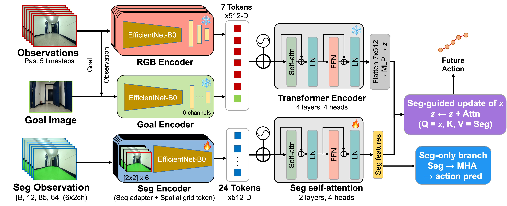
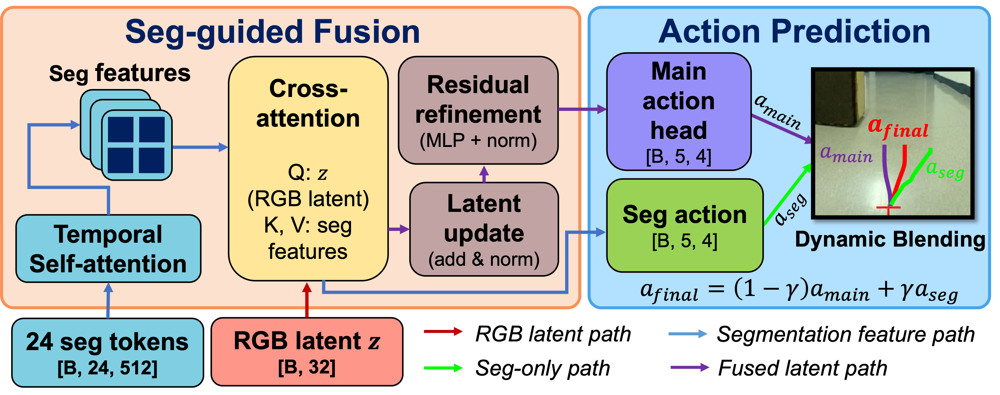

Under review
Vision-based navigation models, particularly foundation models, generate viable trajectories from RGB observations alone. However, even state-of-the-art transformer- and diffusion-based policies struggle to generalize in unfamiliar deployment environments containing unseen obstacles or shifted conditions. The resulting trajectories often remain goal-directed but unsafe. Existing efforts improve safety through external trajectory correction or internal geometric priors, yet the resulting policies are not trained to explicitly represent obstacle boundaries or traversable free-space structure. To address this, we propose a navigation model that incorporates these structures directly into the policy via fine-tuning and is designed for transformer-based RGB navigation policies. Across multiple robot platforms, indoor environments, and static and dynamic obstacle scenarios, our method reduces collision frequency relative to ViNT, NoMaD, and their CARE-augmented variants while maintaining goal-reaching performance.
Overview of the proposed method and experimental results.


Static obstacles evaluated on the LoCoBot platform.
Static obstacles evaluated on the RoboMaster platform.
Static obstacles evaluated on the TurtleBot4 platform.
A dynamic obstacle appears from a corner along the robot's planned path.
A dynamic obstacle approaches head-on toward the robot.
Comparison of navigation performance between baseline vision-based models and SAFER-Nav across three robot platforms and two different indoor environments. Metrics include goal arrival rate (%), collision counts per run, traveled distance (m), and completion time (s).
| Robot & Model | Environment TE | Environment CY | ||||||
|---|---|---|---|---|---|---|---|---|
| Goal% ↑ | #Coll. ↓ | Dist. (m) | Time (s) | Goal% ↑ | #Coll. ↓ | Dist. (m) | Time (s) | |
| RoboMaster | ||||||||
| SAFER-Nav (Ours) | 0.95 | 0 | 14.92 ± 0.60 | 77.31 ± 6.38 | 0.9 | 0.11 | 25.07 ± 0.49 | 129.77 ± 4.36 |
| ViNT | 0.6 | 3.17 | 14.59 ± 0.67 | 79.99 ± 6.95 | 0.4 | 0.75 | 26.20 ± 0.65 | 128.63 ± 3.12 |
| NoMaD | 0.3 | 3.67 | 16.38 ± 0.20 | 87.50 ± 5.72 | 0.5 | 3.4 | 25.48 ± 0.78 | 122.27 ± 3.70 |
| ViNT + CARE | 0.5 | 1.4 | 15.17 ± 0.62 | 82.98 ± 4.22 | 0.1 | 1 | 26.35 | 138.25 |
| NoMaD + CARE | 0.2 | 4 | 17.07 ± 1.09 | 91.75 ± 3.18 | 0.1 | 2 | 25.97 | 131.19 |
| TurtleBot4 | ||||||||
| SAFER-Nav (Ours) | 0.85 | 0.35 | 14.31 ± 0.95 | 85.83 ± 7.31 | 0.9 | 0.22 | 25.20 ± 0.80 | 137.54 ± 5.31 |
| ViNT | 0.3 | 3 | 15.21 ± 0.52 | 84.03 ± 2.28 | 0.4 | 1 | 26.12 ± 0.73 | 141.89 ± 6.90 |
| NoMaD | 0.1 | 7 | 23.42 | 120.50 | 0.2 | 4.5 | 26.33 ± 0.15 | 125.73 ± 5.49 |
| ViNT + CARE | 0.4 | 3.25 | 14.35 ± 0.28 | 85.75 ± 4.60 | 0.3 | 3.33 | 26.84 ± 0.28 | 134.37 ± 3.16 |
| NoMaD + CARE | 0.2 | 4.5 | 17.28 ± 2.31 | 107.75 ± 7.07 | 0.2 | 1.5 | 26.08 ± 0.17 | 147.95 ± 6.16 |
| LoCoBot | ||||||||
| SAFER-Nav (Ours) | 0.95 | 0.26 | 14.92 ± 0.27 | 86.08 ± 3.35 | 0.95 | 0.11 | 25.28 ± 0.87 | 133.13 ± 3.26 |
| ViNT | 0.2 | 2.5 | 17.18 ± 0.21 | 82.19 ± 2.74 | 0.6 | 0.17 | 25.88 ± 0.82 | 126.31 ± 6.09 |
| NoMaD | 0.2 | 2.5 | 18.78 ± 0.22 | 102.34 ± 1.23 | 0.4 | 4.75 | 26.14 ± 0.27 | 129.94 ± 5.83 |
| ViNT + CARE | 0 | N/A | N/A | N/A | 0.4 | 1.25 | 25.29 ± 0.14 | 142.72 ± 4.70 |
| NoMaD + CARE | 0 | N/A | N/A | N/A | 0.3 | 3 | 25.92 ± 0.49 | 152.59 ± 2.18 |
Each marker represents one method. The x-axis denotes average collision counts per run and the y-axis denotes goal arrival rate (%). Methods closer to the top-left corner indicate better overall performance.
Number of trials where collisions occur (out of 10 trials) for each dynamic obstacle scenario. The dynamic obstacle is a teleoperated TurtleBot4 mobile robot.
| Model | (i) Corner-Appear | (ii) Front-Approach |
|---|---|---|
| SAFER-Nav (Ours) | 0/10 | 0/10 |
| ViNT | 5/10 | 9/10 |
| NoMaD | 6/10 | 8/10 |
| ViNT + CARE | 3/10 | 2/10 |
| NoMaD + CARE | 2/10 | 2/10 |